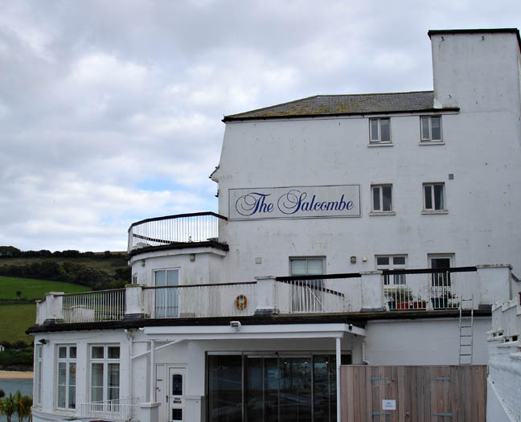
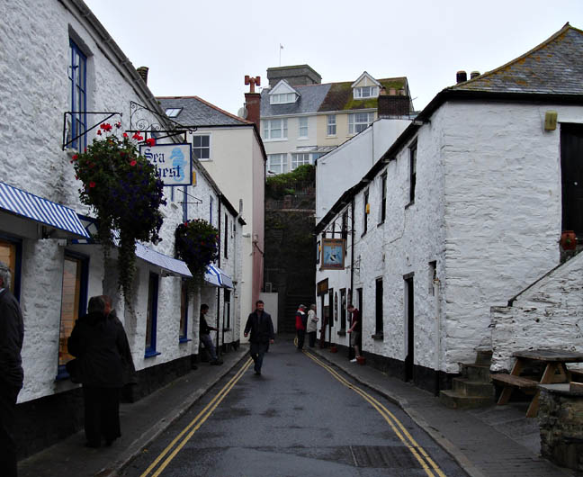
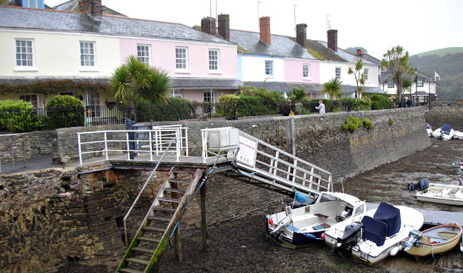
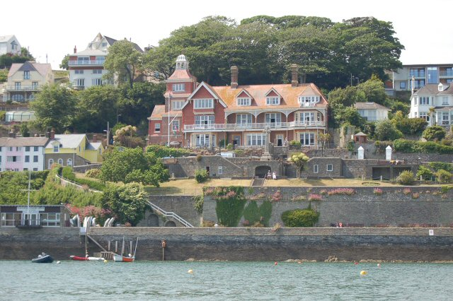
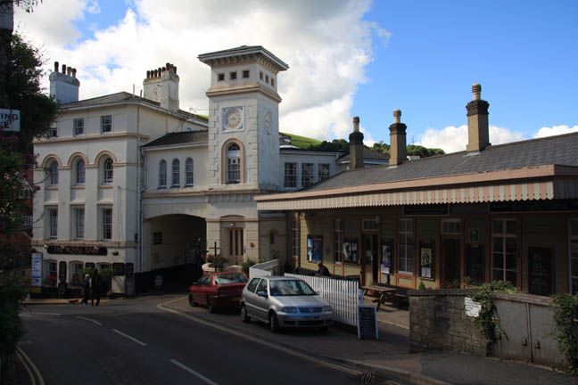
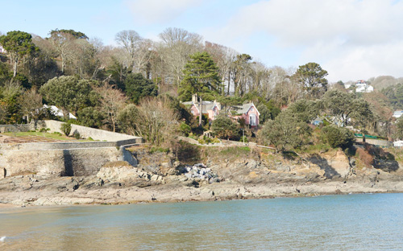
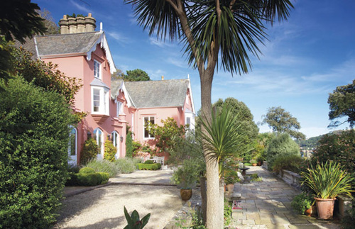
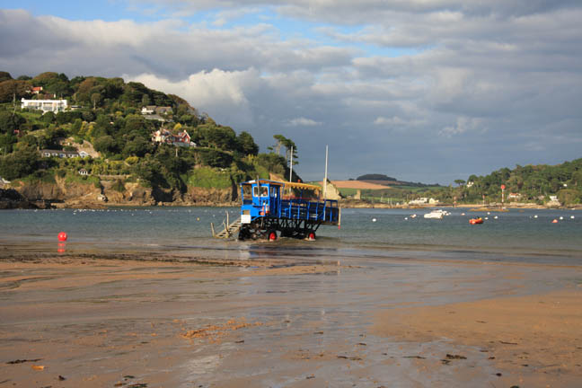

The Salcombe Hotel used as 'The Majestic Hotel'. Salcombe is also featured in 'Evil Under The Sun'.

The Fortescue Arms in Union Street, Salcombe is used as the 'Tea Shop' that Poirot & Hastings visit.

Shop in Union Street used as Charles Vyse's office.

Salcombe Harbour.

Salcombe Yacht Club - used as 'The Grange Nursing Home'.

Kingswear Station (Paignton to Dartmouth Steam Railway)
became 'St.Looe Train Station'. The view of Dartmouth seen behind the station on the screen was actually superimposed.

The Moult used as 'End House' - seen above the waterline at South Sands.

The Moult was home to Alfred Lord Tennyson and was where he wrote his final poem Crossing the Bar.

South Sands, Salcombe - the final scene eating the ice creams was filmed here.